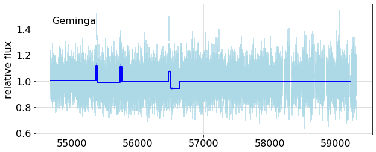

---

title: Analyses


keywords: fastai
sidebar: home_sidebar

summary: "Ongoing analyses"
description: "Ongoing analyses"
nb_path: "nbs/90_analysis.ipynb"
---
<!--

#################################################
### THIS FILE WAS AUTOGENERATED! DO NOT EDIT! ###
#################################################
# file to edit: nbs/90_analysis.ipynb
# command to build the docs after a change: nbdev_build_docs

-->

<div class="container" id="notebook-container">
        
    {% raw %}
    
<div class="cell border-box-sizing code_cell rendered">

</div>
    {% endraw %}

<div class="cell border-box-sizing text_cell rendered"><div class="inner_cell">
<div class="text_cell_render border-box-sizing rendered_html">
<p><strong><code>light_curves</code> library functions used here</strong></p>
<ul>
<li><a href="/light_curves/cells.html#get_cells"><code>get_cells</code></a></li>
<li><a href="/light_curves/simulation.html#simulate_cells"><code>simulate_cells</code></a></li>
<li><a href="/light_curves/lightcurve.html#get_lightcurve"><code>get_lightcurve</code></a></li>
<li><a href="/light_curves/bayesian.html#get_bb_partition"><code>get_bb_partition</code></a></li>
<li><a href="/light_curves/cells.html#partition_cells"><code>partition_cells</code></a></li>
<li><a href="/light_curves/lightcurve.html#fit_cells"><code>fit_cells</code></a></li>
<li><a href="/light_curves/lightcurve.html#flux_plot"><code>flux_plot</code></a></li>
</ul>

</div>
</div>
</div>
<div class="cell border-box-sizing text_cell rendered"><div class="inner_cell">
<div class="text_cell_render border-box-sizing rendered_html">
<h2 id="Introduction">Introduction<a class="anchor-link" href="#Introduction"> </a></h2><p>This notebook does not produce a module to add to the library, it a place to run, and report on analyses using the library. It uses local code, shown below.</p>
<p>This is also an exploration of this style of presenting code, and data analysis based on it.</p>
<h2 id="Geminga-analyses">Geminga analyses<a class="anchor-link" href="#Geminga-analyses"> </a></h2><p>Following Kerr's example, we use the source Geminga to check that this analysis of data gives results consistent with its being constant. As you can see below, the BB analysis finds 16 breaks, which merit further checks. That is followed by a simulation using
Geminga's weight distribution and exposure. The run shown here finds one minor break, a change of 0.1%.</p>

</div>
</div>
</div>
<div class="cell border-box-sizing text_cell rendered"><div class="inner_cell">
<div class="text_cell_render border-box-sizing rendered_html">
<p><strong>Local code</strong></p>

</div>
</div>
</div>
    {% raw %}
    
<div class="cell border-box-sizing code_cell rendered">
<details class="description">
      <summary data-open="Hide Code" data-close="Show Code"></summary>
        <summary></summary>
        <div class="input">

<div class="inner_cell">
    <div class="input_area">
<div class=" highlight hl-ipython3"><pre><span></span><span class="kn">from</span> <span class="nn">light_curves.config</span> <span class="kn">import</span> <span class="o">*</span>
<span class="kn">from</span> <span class="nn">light_curves.bayesian</span> <span class="kn">import</span> <span class="o">*</span>
<span class="kn">from</span> <span class="nn">light_curves.simulation</span> <span class="kn">import</span> <span class="o">*</span>
<span class="kn">from</span> <span class="nn">light_curves.lightcurve</span> <span class="kn">import</span> <span class="o">*</span>
<span class="kn">from</span> <span class="nn">light_curves.cells</span> <span class="kn">import</span> <span class="o">*</span>

<span class="k">def</span> <span class="nf">bb_overplot</span><span class="p">(</span><span class="n">config</span><span class="p">,</span> <span class="n">lc</span><span class="p">,</span> <span class="n">bb_fit</span><span class="p">,</span> <span class="n">ax</span><span class="o">=</span><span class="kc">None</span><span class="p">,</span>  <span class="o">**</span><span class="n">kwargs</span><span class="p">):</span>
    <span class="n">fig</span><span class="p">,</span> <span class="n">ax</span> <span class="o">=</span> <span class="n">plt</span><span class="o">.</span><span class="n">subplots</span><span class="p">(</span><span class="mi">1</span><span class="p">,</span><span class="mi">1</span><span class="p">,</span> <span class="n">figsize</span><span class="o">=</span><span class="p">(</span><span class="mi">12</span><span class="p">,</span><span class="mi">4</span><span class="p">))</span> <span class="k">if</span> <span class="ow">not</span> <span class="n">ax</span> <span class="k">else</span> <span class="p">(</span><span class="n">ax</span><span class="o">.</span><span class="n">figure</span><span class="p">,</span> <span class="n">ax</span><span class="p">)</span>
    <span class="n">flux_plot</span><span class="p">(</span><span class="n">config</span><span class="p">,</span> <span class="n">lc</span><span class="p">,</span> <span class="n">ax</span><span class="o">=</span><span class="n">ax</span><span class="p">,</span> <span class="n">colors</span><span class="o">=</span><span class="p">((</span><span class="s1">&#39;lightblue&#39;</span><span class="p">,</span> <span class="s1">&#39;sandybrown&#39;</span><span class="p">,</span> <span class="s1">&#39;blue&#39;</span><span class="p">)),</span><span class="o">**</span><span class="n">kwargs</span><span class="p">)</span>
    <span class="n">flux_plot</span><span class="p">(</span><span class="n">config</span><span class="p">,</span> <span class="n">bb_fit</span><span class="p">,</span> <span class="n">ax</span><span class="o">=</span><span class="n">ax</span><span class="p">,</span> <span class="n">step</span><span class="o">=</span><span class="kc">True</span><span class="p">,</span> <span class="o">**</span><span class="n">kwargs</span><span class="p">)</span>
    
<span class="k">def</span> <span class="nf">simulation</span><span class="p">(</span><span class="n">config</span><span class="p">,</span> <span class="n">source</span><span class="p">,</span> <span class="n">bb_key</span><span class="o">=</span><span class="kc">None</span><span class="p">):</span>
    <span class="sd">&quot;&quot;&quot;Create and analyze a a simulation for the source</span>
<span class="sd">    Returns the simulated, and fit light curves</span>
<span class="sd">    &quot;&quot;&quot;</span>

    <span class="n">lc</span> <span class="o">=</span> <span class="n">get_lightcurve</span><span class="p">(</span><span class="n">config</span><span class="p">,</span> <span class="n">source</span><span class="p">)</span>
    <span class="n">data_cells</span> <span class="o">=</span> <span class="n">get_cells</span><span class="p">(</span><span class="n">config</span><span class="p">,</span> <span class="n">source</span><span class="p">)</span>

    <span class="c1">#  Get the rate from the data</span>
    <span class="n">cq</span> <span class="o">=</span> <span class="n">data_cells</span><span class="o">.</span><span class="n">query</span><span class="p">(</span><span class="s1">&#39;e&gt;0.3&#39;</span><span class="p">)</span>
    <span class="n">T</span><span class="p">,</span> <span class="n">N</span> <span class="o">=</span> <span class="n">np</span><span class="o">.</span><span class="n">sum</span><span class="p">(</span><span class="n">cq</span><span class="o">.</span><span class="n">tw</span><span class="p">),</span> <span class="n">np</span><span class="o">.</span><span class="n">sum</span><span class="p">(</span><span class="n">cq</span><span class="o">.</span><span class="n">n</span><span class="p">)</span>
    <span class="n">sflux</span><span class="o">=</span><span class="k">lambda</span> <span class="n">t</span><span class="p">:</span> <span class="n">N</span><span class="o">/</span><span class="n">T</span>

    <span class="c1"># simulate, then fit cells to create a simulated light curve </span>
    <span class="n">sim_cells</span> <span class="o">=</span> <span class="n">simulate_cells</span><span class="p">(</span><span class="n">config</span><span class="p">,</span> <span class="n">source</span><span class="p">,</span> <span class="n">source_flux</span><span class="o">=</span><span class="n">sflux</span>  <span class="p">)</span>
    <span class="n">sim_lc</span>  <span class="o">=</span> <span class="n">fit_cells</span><span class="p">(</span><span class="n">config</span><span class="p">,</span> <span class="n">sim_cells</span><span class="p">)</span> 

    <span class="n">sim_edges</span> <span class="o">=</span> <span class="n">get_bb_partition</span><span class="p">(</span><span class="n">config</span><span class="p">,</span> <span class="n">sim_lc</span><span class="p">,</span>  <span class="n">key</span><span class="o">=</span><span class="n">bb_key</span><span class="p">)</span> <span class="c1">#&#39;simulated_BB_partition_Geminga&#39;) </span>

    <span class="c1"># partion, then fit the cells according to the edges</span>
    <span class="n">sim_bb_cells</span> <span class="o">=</span> <span class="n">partition_cells</span><span class="p">(</span><span class="n">config</span><span class="p">,</span> <span class="n">sim_cells</span><span class="p">,</span> <span class="n">sim_edges</span><span class="p">);</span>
    <span class="n">sim_bb_fit</span>  <span class="o">=</span> <span class="n">fit_cells</span><span class="p">(</span><span class="n">config</span><span class="p">,</span> <span class="n">sim_bb_cells</span><span class="p">,</span> <span class="p">)</span>
    <span class="k">return</span> <span class="n">sim_lc</span><span class="p">,</span> <span class="n">sim_bb_fit</span>

<span class="k">def</span> <span class="nf">analyze_data</span><span class="p">(</span><span class="n">config</span><span class="p">,</span> <span class="n">source</span><span class="p">):</span>
    <span class="sd">&quot;&quot;&quot;</span>
<span class="sd">    Analyze data from the source</span>
<span class="sd">    </span>
<span class="sd">    Returns, data a partitioned light curves</span>
<span class="sd">    &quot;&quot;&quot;</span>
    <span class="n">lc</span> <span class="o">=</span> <span class="n">get_lightcurve</span><span class="p">(</span><span class="n">config</span><span class="p">,</span> <span class="n">source</span><span class="p">)</span>
    <span class="n">cells</span> <span class="o">=</span> <span class="n">get_cells</span><span class="p">(</span><span class="n">config</span><span class="p">,</span> <span class="n">source</span><span class="p">)</span>
    <span class="n">edges</span> <span class="o">=</span> <span class="n">get_bb_partition</span><span class="p">(</span><span class="n">config</span><span class="p">,</span> <span class="n">lc</span><span class="p">,</span> <span class="n">LikelihoodFitness</span><span class="p">,</span> <span class="n">key</span><span class="o">=</span><span class="s1">&#39;bb-Geminga-test&#39;</span><span class="p">)</span> 
    <span class="n">bb_cells</span> <span class="o">=</span> <span class="n">partition_cells</span><span class="p">(</span><span class="n">config</span><span class="p">,</span> <span class="n">cells</span><span class="p">,</span> <span class="n">edges</span><span class="p">);</span>
    <span class="n">bb_lc</span>  <span class="o">=</span> <span class="n">fit_cells</span><span class="p">(</span><span class="n">config</span><span class="p">,</span> <span class="n">bb_cells</span><span class="p">,</span> <span class="p">)</span>
    <span class="k">return</span> <span class="n">lc</span><span class="p">,</span> <span class="n">bb_lc</span>

<span class="k">def</span> <span class="nf">fit_table</span><span class="p">(</span><span class="n">lc</span><span class="p">,</span> <span class="n">expect</span><span class="o">=</span><span class="mf">1.0</span><span class="p">):</span>
    <span class="sd">&quot;&quot;&quot;Generate a summary table from a light curve&quot;&quot;&quot;</span>
    <span class="n">fits</span> <span class="o">=</span> <span class="n">lc</span><span class="o">.</span><span class="n">fit</span>
    <span class="n">flux</span> <span class="o">=</span> <span class="n">fits</span><span class="o">.</span><span class="n">apply</span><span class="p">(</span><span class="k">lambda</span> <span class="n">f</span><span class="p">:</span> <span class="n">f</span><span class="o">.</span><span class="n">flux</span><span class="p">)</span>
    <span class="n">errors</span> <span class="o">=</span> <span class="n">fits</span><span class="o">.</span><span class="n">apply</span><span class="p">(</span><span class="k">lambda</span> <span class="n">f</span><span class="p">:</span> <span class="p">(</span><span class="nb">round</span><span class="p">(</span><span class="n">f</span><span class="o">.</span><span class="n">errors</span><span class="p">[</span><span class="mi">0</span><span class="p">]</span><span class="o">-</span><span class="n">f</span><span class="o">.</span><span class="n">flux</span><span class="p">,</span><span class="mi">3</span><span class="p">),</span> <span class="nb">round</span><span class="p">(</span><span class="n">f</span><span class="o">.</span><span class="n">errors</span><span class="p">[</span><span class="mi">1</span><span class="p">]</span><span class="o">-</span><span class="n">f</span><span class="o">.</span><span class="n">flux</span> <span class="p">,</span><span class="mi">3</span><span class="p">)</span> <span class="p">)</span> <span class="p">)</span>
    <span class="n">sigma_dev</span> <span class="o">=</span> <span class="n">fits</span><span class="o">.</span><span class="n">apply</span><span class="p">(</span><span class="k">lambda</span> <span class="n">f</span><span class="p">:</span> <span class="nb">round</span><span class="p">(</span><span class="n">f</span><span class="o">.</span><span class="n">poiss</span><span class="o">.</span><span class="n">sigma_dev</span><span class="p">(</span><span class="n">expect</span><span class="p">),</span><span class="mi">1</span><span class="p">)</span> <span class="p">)</span>
    <span class="n">df</span> <span class="o">=</span> <span class="n">lc</span><span class="p">[</span><span class="s1">&#39;t tw n&#39;</span><span class="o">.</span><span class="n">split</span><span class="p">()];</span> <span class="n">df</span>
    <span class="n">df</span><span class="o">.</span><span class="n">loc</span><span class="p">[:,</span><span class="s1">&#39;flux&#39;</span><span class="p">]</span> <span class="o">=</span> <span class="n">flux</span><span class="o">.</span><span class="n">values</span><span class="o">.</span><span class="n">round</span><span class="p">(</span><span class="mi">4</span><span class="p">)</span>
    <span class="n">df</span><span class="o">.</span><span class="n">loc</span><span class="p">[:,</span> <span class="s1">&#39;errors&#39;</span><span class="p">]</span> <span class="o">=</span> <span class="n">errors</span><span class="o">.</span><span class="n">values</span>
    <span class="n">df</span><span class="o">.</span><span class="n">loc</span><span class="p">[:,</span> <span class="s1">&#39;sigma_dev&#39;</span><span class="p">]</span> <span class="o">=</span> <span class="n">sigma_dev</span><span class="o">.</span><span class="n">values</span>
    <span class="k">return</span> <span class="n">df</span>
</pre></div>

    </div>
</div>
</div>

    </details>
</div>
    {% endraw %}

    {% raw %}
    
<div class="cell border-box-sizing code_cell rendered">
<details class="description">
      <summary data-open="Hide Code" data-close="Show Code"></summary>
        <summary></summary>
        <div class="input">

<div class="inner_cell">
    <div class="input_area">
<div class=" highlight hl-ipython3"><pre><span></span><span class="k">def</span> <span class="nf">analysis_plots</span><span class="p">(</span><span class="n">name</span><span class="p">,</span> <span class="n">expect</span><span class="o">=</span><span class="mf">0.990</span><span class="p">,</span> <span class="n">simname</span><span class="o">=</span><span class="s1">&#39;&#39;</span><span class="p">):</span>
    <span class="sd">&quot;&quot;&quot;</span>
<span class="sd">    #### {sim} Geminga data</span>
<span class="sd">    </span>
<span class="sd">    Get, or simulate, the daily binned data, or cells; perform Bayesian Blocks partition;</span>
<span class="sd">    make fits to the blocks. &lt;br&gt;(Run at {date})</span>
<span class="sd">    </span>
<span class="sd">    {output}</span>
<span class="sd">    </span>
<span class="sd">    This shows the fits to all cells, with the BB fit overlays</span>
<span class="sd">    {fig1}</span>
<span class="sd">    </span>
<span class="sd">    Since this is a constant source, there should be no breaks, that is, only one partition.</span>
<span class="sd">    Here is a table of the partition fits:</span>
<span class="sd">    </span>
<span class="sd">    {df_text}</span>
<span class="sd">    The last column represents the compatibility of the flux measurement for each partition</span>
<span class="sd">    with the expected value {expect} in equivalent sigma units.</span>
<span class="sd">    </span>
<span class="sd">    Expand the plot around short, &lt; 100 day partitions.</span>
<span class="sd">    {short_check}</span>
<span class="sd">    </span>
<span class="sd">    {fig2}</span>
<span class="sd">    &quot;&quot;&quot;</span>
    <span class="n">config</span> <span class="o">=</span> <span class="n">Config</span><span class="p">()</span>
    <span class="n">source</span> <span class="o">=</span> <span class="n">PointSource</span><span class="p">(</span><span class="n">name</span><span class="p">)</span>
    <span class="n">simulated</span> <span class="o">=</span> <span class="nb">bool</span><span class="p">(</span><span class="n">simname</span><span class="p">)</span>
    <span class="n">sim</span><span class="o">=</span> <span class="s1">&#39;Simulated&#39;</span> <span class="k">if</span> <span class="n">simulated</span> <span class="k">else</span> <span class="s1">&#39;&#39;</span>
    <span class="k">with</span> <span class="n">capture_print</span><span class="p">(</span><span class="s1">&#39;Analysis output&#39;</span> <span class="p">)</span> <span class="k">as</span> <span class="n">output</span><span class="p">:</span>
        <span class="k">if</span> <span class="ow">not</span> <span class="n">simulated</span><span class="p">:</span>
            <span class="n">lc</span><span class="p">,</span> <span class="n">bb_lc</span> <span class="o">=</span> <span class="n">analyze_data</span><span class="p">(</span><span class="n">config</span><span class="p">,</span> <span class="n">source</span><span class="p">)</span>
        <span class="k">else</span><span class="p">:</span> 
            <span class="n">lc</span><span class="p">,</span> <span class="n">bb_lc</span> <span class="o">=</span> <span class="n">simulation</span><span class="p">(</span><span class="n">config</span><span class="p">,</span> <span class="n">source</span><span class="p">,</span> <span class="n">bb_key</span><span class="o">=</span><span class="n">simname</span><span class="p">)</span> 

    <span class="n">pd</span><span class="o">.</span><span class="n">set_option</span><span class="p">(</span><span class="s1">&#39;display.precision&#39;</span><span class="p">,</span> <span class="mi">3</span><span class="p">)</span><span class="c1">#, &#39;display.colheader_justify&#39;,&#39;left&#39;)</span>
    <span class="n">expect</span>
    <span class="n">df</span> <span class="o">=</span> <span class="n">fit_table</span><span class="p">(</span><span class="n">bb_lc</span><span class="p">,</span> <span class="n">expect</span><span class="o">=</span><span class="n">expect</span><span class="p">)</span>
    <span class="n">df_text</span> <span class="o">=</span> <span class="n">monospace</span><span class="p">(</span><span class="nb">str</span><span class="p">(</span><span class="n">df</span><span class="p">),</span> <span class="s1">&#39;BB fit table&#39;</span><span class="p">,</span> <span class="nb">open</span><span class="o">=</span><span class="kc">True</span><span class="p">)</span>
        
    <span class="n">plt</span><span class="o">.</span><span class="n">rc</span><span class="p">(</span><span class="s1">&#39;font&#39;</span><span class="p">,</span> <span class="n">size</span><span class="o">=</span><span class="mi">16</span><span class="p">)</span>
    <span class="n">fig1</span><span class="p">,</span> <span class="n">ax</span> <span class="o">=</span> <span class="n">plt</span><span class="o">.</span><span class="n">subplots</span><span class="p">(</span><span class="mi">1</span><span class="p">,</span><span class="mi">1</span><span class="p">,</span> <span class="n">sharex</span><span class="o">=</span><span class="kc">True</span><span class="p">,</span> <span class="n">figsize</span><span class="o">=</span><span class="p">(</span><span class="mi">10</span><span class="p">,</span><span class="mi">4</span><span class="p">),</span> <span class="n">num</span><span class="o">=</span><span class="mi">1</span><span class="p">)</span>
    <span class="n">bb_overplot</span><span class="p">(</span><span class="n">config</span><span class="p">,</span> <span class="n">lc</span><span class="p">,</span> <span class="n">bb_lc</span><span class="p">,</span> <span class="n">ax</span> <span class="o">=</span> <span class="n">ax</span><span class="p">)</span>
    <span class="n">ax</span><span class="o">.</span><span class="n">text</span><span class="p">(</span><span class="mf">0.05</span><span class="p">,</span> <span class="mf">0.85</span><span class="p">,</span> <span class="n">name</span><span class="p">,</span>  <span class="n">transform</span><span class="o">=</span><span class="n">ax</span><span class="o">.</span><span class="n">transAxes</span><span class="p">);</span>
    <span class="n">fig1</span><span class="o">.</span><span class="n">width</span><span class="o">=</span><span class="mi">600</span>

    <span class="n">bb_short</span> <span class="o">=</span> <span class="n">bb_lc</span><span class="o">.</span><span class="n">query</span><span class="p">(</span><span class="s1">&#39;tw&lt;100&#39;</span><span class="p">);</span> <span class="n">ns</span> <span class="o">=</span><span class="nb">len</span><span class="p">(</span><span class="n">bb_short</span><span class="p">)</span>
    <span class="k">if</span> <span class="n">ns</span><span class="o">&gt;</span><span class="mi">0</span><span class="p">:</span>
        <span class="n">short_check</span><span class="o">=</span><span class="sa">f</span><span class="s1">&#39;There are </span><span class="si">{</span><span class="n">ns</span><span class="si">}</span><span class="s1"> such.&#39;</span>
        <span class="n">rows</span> <span class="o">=</span> <span class="p">(</span><span class="n">ns</span><span class="o">+</span><span class="mi">1</span><span class="p">)</span><span class="o">//</span><span class="mi">3</span>
        <span class="n">fig2</span><span class="p">,</span> <span class="n">axx</span> <span class="o">=</span> <span class="n">plt</span><span class="o">.</span><span class="n">subplots</span><span class="p">(</span><span class="mi">3</span><span class="p">,</span> <span class="n">rows</span><span class="p">,</span> <span class="n">figsize</span><span class="o">=</span><span class="p">(</span><span class="mi">15</span><span class="p">,</span> <span class="mi">4</span><span class="o">*</span><span class="n">rows</span><span class="p">),</span><span class="n">sharey</span><span class="o">=</span><span class="kc">True</span><span class="p">,</span> <span class="n">sharex</span><span class="o">=</span><span class="kc">True</span><span class="p">,</span>
                     <span class="n">gridspec_kw</span><span class="o">=</span><span class="nb">dict</span><span class="p">(</span><span class="n">top</span><span class="o">=</span><span class="mf">0.85</span><span class="p">,</span> <span class="n">left</span><span class="o">=</span><span class="mf">0.08</span><span class="p">,</span> <span class="n">bottom</span><span class="o">=</span><span class="mf">0.15</span><span class="p">,</span> <span class="n">hspace</span><span class="o">=</span><span class="mf">0.2</span> <span class="p">),</span><span class="n">num</span><span class="o">=</span><span class="mi">2</span><span class="p">)</span>
        <span class="n">fig2</span><span class="o">.</span><span class="n">width</span><span class="o">=</span><span class="mi">600</span>
        <span class="k">for</span> <span class="n">t</span><span class="p">,</span> <span class="n">ax</span> <span class="ow">in</span> <span class="nb">zip</span><span class="p">(</span><span class="n">bb_short</span><span class="o">.</span><span class="n">t</span><span class="p">,</span> <span class="n">axx</span><span class="o">.</span><span class="n">flatten</span><span class="p">()):</span>
            <span class="n">bb_overplot</span><span class="p">(</span><span class="n">config</span><span class="p">,</span> <span class="n">lc</span><span class="p">,</span> <span class="n">bb_lc</span><span class="p">,</span> <span class="n">ax</span><span class="o">=</span><span class="n">ax</span><span class="p">,</span> <span class="n">tzero</span><span class="o">=</span><span class="n">t</span><span class="p">,</span> <span class="n">xlim</span><span class="o">=</span><span class="p">(</span><span class="o">-</span><span class="mi">50</span><span class="p">,</span> <span class="o">+</span><span class="mi">50</span><span class="p">))</span>
    <span class="k">else</span><span class="p">:</span>
        <span class="n">fig2</span><span class="o">=</span><span class="s1">&#39;&#39;</span>
        <span class="n">short_check</span> <span class="o">=</span> <span class="s1">&#39;None found.&#39;</span>
    <span class="k">return</span> <span class="nb">locals</span><span class="p">()</span>

<span class="k">if</span> <span class="n">Config</span><span class="p">()</span><span class="o">.</span><span class="n">valid</span><span class="p">:</span>
    <span class="n">nbdoc</span><span class="p">(</span><span class="n">analysis_plots</span><span class="p">,</span> <span class="s1">&#39;Geminga&#39;</span><span class="p">)</span>
</pre></div>

    </div>
</div>
</div>

    </details>
<div class="output_wrapper">
<div class="output">

<div class="output_area">

<div class="output_subarea output_stream output_stderr output_text">
<pre>/home/burnett/miniconda3/lib/python3.7/site-packages/pandas/core/indexing.py:845: SettingWithCopyWarning: 
A value is trying to be set on a copy of a slice from a DataFrame.
Try using .loc[row_indexer,col_indexer] = value instead

See the caveats in the documentation: https://pandas.pydata.org/pandas-docs/stable/user_guide/indexing.html#returning-a-view-versus-a-copy
  self.obj[key] = _infer_fill_value(value)
/home/burnett/miniconda3/lib/python3.7/site-packages/pandas/core/indexing.py:966: SettingWithCopyWarning: 
A value is trying to be set on a copy of a slice from a DataFrame.
Try using .loc[row_indexer,col_indexer] = value instead

See the caveats in the documentation: https://pandas.pydata.org/pandas-docs/stable/user_guide/indexing.html#returning-a-view-versus-a-copy
  self.obj[item] = s
</pre>
</div>
</div>

<div class="output_area">


<div class="output_markdown rendered_html output_subarea ">
<h4 id="Geminga-data">Geminga data<a class="anchor-link" href="#Geminga-data"> </a></h4><p>Get, or simulate, the daily binned data, or cells; perform Bayesian Blocks partition;
make fits to the blocks. <br>(Run at 2020-12-22 13:30)</p>
<p><details  class="nbdoc-description" >  <summary> Analysis output </summary>  <div style="margin-left: 5%"><pre>Light curve for Geminga: Saving to cache with key "lightfcurve_Geminga"<br>Cell data for Geminga: Saving to cache with key "cells_Geminga"<br>Photon data: Saving to cache with key "photons_Geminga"<br>Loading  132 months from Arrow dataset /home/burnett/data/dataset<br>....................................................................................................................................<br>   Selected 1,313,726 photons within 5 deg of  (195.13,4.27)<br>   Energies: 100.0-1000000 MeV<br> Dates:    2008-08-04 15:46 - 2019-08-03 01:17<br>   MJD  :    54682.7          - 58698.1         <br>Load weights from file /mnt/c/users/thbur/OneDrive/fermi/weight_files/Geminga_weights.pkl<br>  Found: PSR J0633+1746 at (195.14, 4.27)<br> Applyng weights: 240 / 1313726 photon pixels are outside weight region<br>  233109 weights set to NaN<br>binned exposure for source Geminga: Saving to cache with key "binned_exposure_Geminga"<br>exposure for Geminga: Saving to cache with key "exposure_Geminga"<br>Processing 12 S/C history (FT2) files<br>  applying cuts cos(theta) &lt; 0.4,  z &lt; 100<br>   file /home/burnett/work/lat-data/ft2/ft2_2008.fits: 362996 entries, 360944 in GTI<br>   file /home/burnett/work/lat-data/ft2/ft2_2009.fits: 874661 entries, 870446 in GTI<br>   file /home/burnett/work/lat-data/ft2/ft2_2010.fits: 889547 entries, 884697 in GTI<br>   file /home/burnett/work/lat-data/ft2/ft2_2011.fits: 882832 entries, 871672 in GTI<br>   file /home/burnett/work/lat-data/ft2/ft2_2012.fits: 881317 entries, 868109 in GTI<br>   file /home/burnett/work/lat-data/ft2/ft2_2013.fits: 885307 entries, 867342 in GTI<br>   file /home/burnett/work/lat-data/ft2/ft2_2014.fits: 894730 entries, 886570 in GTI<br>   file /home/burnett/work/lat-data/ft2/ft2_2015.fits: 890006 entries, 886086 in GTI<br>   file /home/burnett/work/lat-data/ft2/ft2_2016.fits: 890933 entries, 884823 in GTI<br>   file /home/burnett/work/lat-data/ft2/ft2_2017.fits: 888349 entries, 883761 in GTI<br>   file /home/burnett/work/lat-data/ft2/ft2_2018.fits: 842824 entries, 830723 in GTI<br>   file /home/burnett/work/lat-data/ft2/ft2_2019.fits: 737029 entries, 514657 in GTI<br>   Found 9,609,830 S/C entries:  2,695,715 remain after zenith and theta cuts<br>Calculate exposure using the energy domain 100.0-1000000.0 4 bins/decade<br>2695715 entries, MJD 54683 - 58698<br>Time bins: 4015 intervals of 1 days, in range (54683.0, 58698.0)<br>Loaded 3873 / 4015 cells with exposure &gt; 0.3 for light curve analysis<br>first cell: t                                                    54683.5<br>tw                                                         1<br>e                                                    1.26456<br>n                                                        330<br>w          [244, 214, 174, 5, 246, 150, 187, 65, 91, 215,...<br>S                                                    225.585<br>B                                                    114.707<br>loglike    light_curves.loglike.LogLike:  time 54683.500,...<br>Name: 0, dtype: object<br>Fitting likelihoods with poisson representation<br>Cell data for Geminga: Restoring from cache with key "cells_Geminga"<br>BB edges for...: Saving to cache with key "bb-Geminga-test"<br>Partitioned 3873 cells into 11 blocks, using LikelihoodFitness <br>Loaded 11 / 11 cells with exposure &gt; 0.3 for fitting<br></pre></div> </details></p>
<p>This shows the fits to all cells, with the BB fit overlays</p>
<div class="nbdoc_image">
<a href="images/analysis_plots_fig_01.png"><figure style="margin-left: 5%">
    
</figure></a></div><p>Since this is a constant source, there should be no breaks, that is, only one partition.
Here is a table of the partition fits:</p>
<p><details open class="nbdoc-description" >  <summary> BB fit table </summary>  <div style="margin-left: 5%"><pre>          t      tw       n   flux           errors  sigma_dev<br>0   55027.5   689.0  208105  0.999  (-0.003, 0.003)        2.9<br>1   55378.5    13.0    3524  1.121  (-0.025, 0.026)        5.3<br>2   55559.5   349.0   95852  0.984  (-0.004, 0.004)       -1.3<br>3   55747.0    26.0    7451  1.117  (-0.017, 0.018)        7.5<br>4   56114.0   708.0  191491  0.991  (-0.003, 0.003)        0.4<br>5   56487.0    38.0   10741  1.078  (-0.014, 0.014)        6.5<br>6   56512.5    13.0    3402  0.901  (-0.021, 0.022)       -4.0<br>7   56858.0   678.0  180858  0.997  (-0.003, 0.003)        2.2<br>8   57197.5     1.0     149  0.535  (-0.066, 0.071)       -5.5<br>9   57913.5  1431.0  367469  0.994  (-0.002, 0.002)        1.8<br>10  58663.0    68.0   11392  1.071  (-0.014, 0.014)        6.1</pre></div> </details>
The last column represents the compatibility of the flux measurement for each partition
with the expected value 0.99 in equivalent sigma units.</p>
<p>Expand the plot around short, &lt; 100 day partitions.
There are 6 such.</p>
<div class="nbdoc_image">
<a href="images/analysis_plots_fig_02.png"><figure style="margin-left: 5%">
    
</figure></a></div>
</div>

</div>

</div>
</div>

</div>
    {% endraw %}

    {% raw %}
    
<div class="cell border-box-sizing code_cell rendered">
<div class="input">

<div class="inner_cell">
    <div class="input_area">
<div class=" highlight hl-ipython3"><pre><span></span><span class="k">if</span> <span class="n">Config</span><span class="p">()</span><span class="o">.</span><span class="n">valid</span><span class="p">:</span>
    <span class="n">nbdoc</span><span class="p">(</span><span class="n">analysis_plots</span><span class="p">,</span> <span class="s1">&#39;Geminga&#39;</span><span class="p">,</span> <span class="n">name</span><span class="o">=</span><span class="s1">&#39;analysis_sim&#39;</span><span class="p">,</span>  <span class="n">simname</span><span class="o">=</span><span class="s1">&#39;analysis_plot_sim&#39;</span><span class="p">)</span>
</pre></div>

    </div>
</div>
</div>

<div class="output_wrapper">
<div class="output">

<div class="output_area">

<div class="output_subarea output_stream output_stderr output_text">
<pre>/home/burnett/miniconda3/lib/python3.7/site-packages/pandas/core/indexing.py:845: SettingWithCopyWarning: 
A value is trying to be set on a copy of a slice from a DataFrame.
Try using .loc[row_indexer,col_indexer] = value instead

See the caveats in the documentation: https://pandas.pydata.org/pandas-docs/stable/user_guide/indexing.html#returning-a-view-versus-a-copy
  self.obj[key] = _infer_fill_value(value)
/home/burnett/miniconda3/lib/python3.7/site-packages/pandas/core/indexing.py:966: SettingWithCopyWarning: 
A value is trying to be set on a copy of a slice from a DataFrame.
Try using .loc[row_indexer,col_indexer] = value instead

See the caveats in the documentation: https://pandas.pydata.org/pandas-docs/stable/user_guide/indexing.html#returning-a-view-versus-a-copy
  self.obj[item] = s
</pre>
</div>
</div>

<div class="output_area">


<div class="output_markdown rendered_html output_subarea ">
<h4 id="Simulated-Geminga-data">Simulated Geminga data<a class="anchor-link" href="#Simulated-Geminga-data"> </a></h4><p>Get, or simulate, the daily binned data, or cells; perform Bayesian Blocks partition;
make fits to the blocks. <br>(Run at 2020-12-22 13:37)</p>
<p><details  class="nbdoc-description" >  <summary> Analysis output </summary>  <div style="margin-left: 5%"><pre>Light curve for Geminga: Restoring from cache with key "lightfcurve_Geminga"<br>Cell data for Geminga: Restoring from cache with key "cells_Geminga"<br>binned exposure for source Geminga: Restoring from cache with key "binned_exposure_Geminga"<br>Weight histogram for Geminga: Saving to cache with key "weight_hist_Geminga"<br>Photon data: Restoring from cache with key "photons_Geminga"<br><br>  Selected 1,313,726 photons within 5 deg of  (195.13,4.27)<br>   Energies: 100.0-1000000 MeV<br> Dates:    2008-08-04 15:46 - 2019-08-03 01:17<br>   MJD  :    54682.7          - 58698.1         <br>Load weights from file /mnt/c/users/thbur/OneDrive/fermi/weight_files/Geminga_weights.pkl<br>  Found: PSR J0633+1746 at (195.14, 4.27)<br> Applyng weights: 240 / 1313726 photon pixels are outside weight region<br>  233109 weights set to NaN<br>Loaded 3873 / 4015 cells with exposure &gt; 0.3 for fitting<br>BB edges for...: Saving to cache with key "analysis_plot_sim"<br>Partitioned 3873 cells into 1 blocks, using LikelihoodFitness <br>Loaded 1 / 1 cells with exposure &gt; 0.3 for fitting<br></pre></div> </details></p>
<p>This shows the fits to all cells, with the BB fit overlays</p>
<div class="nbdoc_image">
<a href="images/analysis_sim_fig_01.png"><figure style="margin-left: 5%">
    
</figure></a></div><p>Since this is a constant source, there should be no breaks, that is, only one partition.
Here is a table of the partition fits:</p>
<p><details open class="nbdoc-description" >  <summary> BB fit table </summary>  <div style="margin-left: 5%"><pre>         t      tw        n   flux           errors  sigma_dev<br>0  56690.0  4014.0  1114526  0.988  (-0.001, 0.001)       -1.8</pre></div> </details>
The last column represents the compatibility of the flux measurement for each partition
with the expected value 0.99 in equivalent sigma units.</p>
<p>Expand the plot around short, &lt; 100 day partitions.
None found.</p>

</div>

</div>

</div>
</div>

</div>
    {% endraw %}

<div class="cell border-box-sizing text_cell rendered"><div class="inner_cell">
<div class="text_cell_render border-box-sizing rendered_html">
<h2 id="TO-DO">TO DO<a class="anchor-link" href="#TO-DO"> </a></h2><ul>
<li>Find out why, for the simulation, and apparently for data, there is a 1% descrepancy between the measured and expected ($\alpha=0$) flux. There are two ways that likelihoods for adjacent cells are combined: the Bayesian Blocks uses tables generated from the Poisson-like representations to each cell, currently with 50 entries, while the fits, to the blocks it recognizes, use the actual weights. I have not carefully compared these.<ul>
<li>It is apparently the poisson fit when applied to high-statisics data. Take a look at this, perhaps a Gaussian would be easier even.</li>
</ul>
</li>
</ul>
<ul>
<li>Look at the 9 or so intervals detected for the data, of which 5 have measured flux increases around 10%,  more than 4$\sigma$. Possibilities are a problem with the exposure, and a change in the background. The latter can be examined by a 2-D fit with $\beta$ free. Another possibility, fixing $\alpha=0$ and fitting $\beta$ is not (yet) supported.</li>
</ul>

</div>
</div>
</div>
    {% raw %}
    
<div class="cell border-box-sizing code_cell rendered">
<div class="input">

<div class="inner_cell">
    <div class="input_area">
<div class=" highlight hl-ipython3"><pre><span></span><span class="o">!</span>date
</pre></div>

    </div>
</div>
</div>

<div class="output_wrapper">
<div class="output">

<div class="output_area">

<div class="output_subarea output_stream output_stdout output_text">
<pre>Tue Dec 22 13:41:52 PST 2020
</pre>
</div>
</div>

</div>
</div>

</div>
    {% endraw %}

</div>
 

